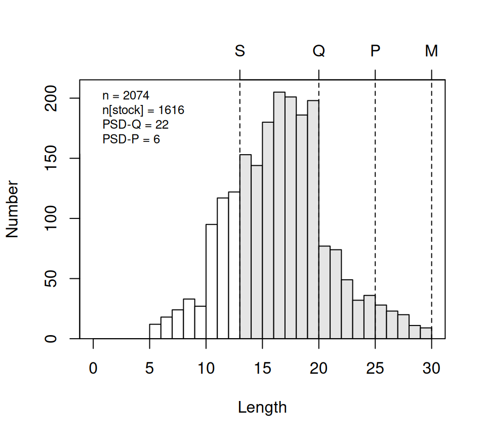
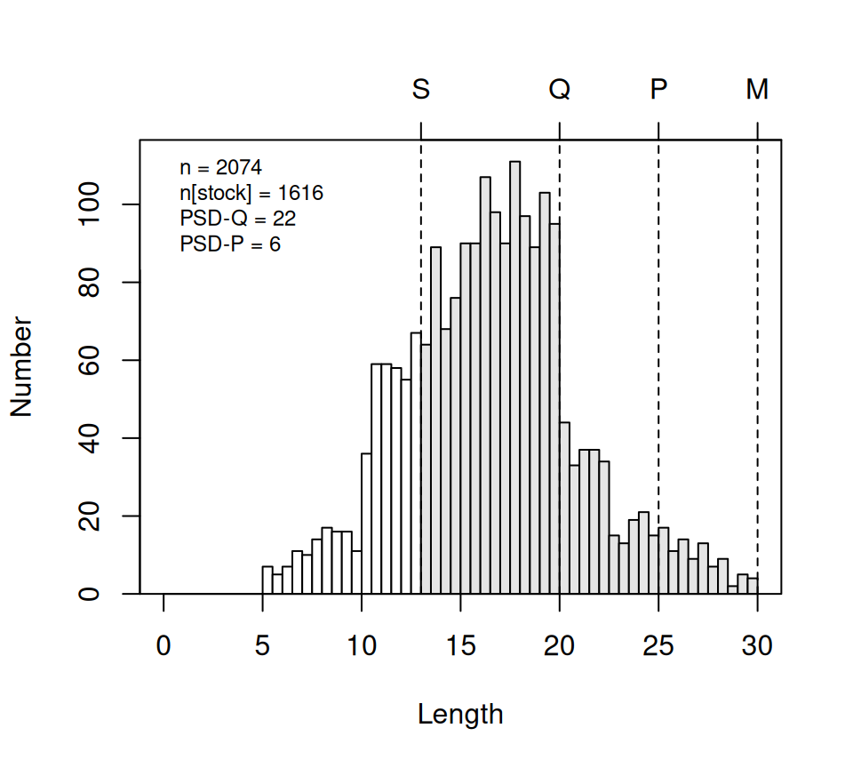

Computing Proportional Size Distribution Metrics in FSA
2026-01-09
Source:vignettes/articles/Computing_PSDs.qmd
Introduction
Summarizing the size structure of fish populations is a common practice for informing fisheries management decisions. One common method for summarizing size structures in North America is to compute the percentage of fish that have reached some minimum size that have also reached a more advanced size. These sizes have been standardized for a number of common North American game fishes and are generally called Gabelhouse lengths, after the author that first described them. The specific percentages are called proportional size distribution (PSD) metrics, and are described in detail in various resources, including Ogle (2016). This article assumes you understand the basics of PSD calculations and will show how to make those calculations using functions in the FSA package.
The following packages are used herein. Note that the FSA functions described here were modified after version 0.9.6 and are thus specific to FSA >v0.9.6.
Looking-Up PSD-Related Lengths
Gabelhouse Length Categories
Five-cell Gabelhouse (GH) length categories have been deveoped for a number of freshwater game fish in the United States, as well as several non-game fish in the United States and some other fish from outside of the United States. These values have been collated into the PSDlit data.frame1 distributed with FSA and are most easily accessed with psdVal(). For example, the GH length categories for Bluegill are retrieved below.
psdVal("Bluegill")
#> substock stock quality preferred memorable trophy
#> 0 80 150 200 250 300The default is to return lengths in millimeters; however, they can be returned in centimeters or inches with units=.2
By default, a sixth cell is included that is labeled as “substock” and will always have the value of 0. This can be useful for some analyses with data that includes individuals shorter than the stock length. Use incl.zero=FALSE to exclude this category.
psdVal("Bluegill",incl.zero=FALSE)
#> stock quality preferred memorable trophy
#> 80 150 200 250 300Use of psdVal() requires spelling (and capitalizing) the species name as it appears in PSDlit. One can see all species names available in PSDlit with psdVal() without any arguments.
psdVal()
#>
#> Species name must be one of following. Be careful of spelling and capitalization.
#> [1] "Alabama Bass" "Arctic Grayling"
#> [3] "Bighead Carp" "Bigmouth Buffalo"
#> [5] "Black Bullhead" "Black Carp"
#> [7] "Black Crappie" "Blue Catfish"
#> [9] "Bluegill" "Brook Trout"
#> [11] "Brook Trout (lentic)" "Brook Trout (lotic)"
#> [13] "Brook Trout (overall)" "Brown Bullhead"
#> [15] "Brown Trout" "Brown Trout (lentic)"
#> [17] "Brown Trout (lotic)" "Bull Trout"
#> [19] "Burbot" "Chain Pickerel"
#> [21] "Channel Catfish" "Chinook Salmon"
#> [23] "Chinook Salmon (landlocked)" "Common Carp"
#> [25] "Cutthroat Trout" "Cutthroat Trout (lentic)"
#> [27] "Cutthroat Trout (lotic)" "Flathead Catfish"
#> [29] "Flier" "Freshwater Drum"
#> [31] "Gizzard Shad" "Golden Trout"
#> [33] "Goldeye" "Grass Carp"
#> [35] "Green Sunfish" "Kokanee"
#> [37] "Lake Chubsucker" "Lake Trout"
#> [39] "Largemouth Bass" "Longear Sunfish"
#> [41] "Longnose Gar" "Muskellunge"
#> [43] "Muskellunge (female)" "Muskellunge (male)"
#> [45] "Muskellunge (overall)" "Northern Pike"
#> [47] "Northern Pikeminnow" "Northern Snakehead"
#> [49] "Paddlefish" "Paddlefish (female)"
#> [51] "Paddlefish (male)" "Paddlefish (overall)"
#> [53] "Pallid Sturgeon" "Palmetto Bass"
#> [55] "Palmetto Bass (original)" "Pumpkinseed"
#> [57] "Rainbow Trout" "Rainbow Trout (lentic)"
#> [59] "Rainbow Trout (lotic)" "Redbreast Sunfish"
#> [61] "Redear Sunfish" "River Carpsucker"
#> [63] "Rock Bass" "Ruffe"
#> [65] "Sauger" "Saugeye"
#> [67] "Shoal Bass" "Shorthead Redhorse"
#> [69] "Silver Carp" "Smallmouth Bass"
#> [71] "Smallmouth Buffalo " "Splake"
#> [73] "Spotted Bass" "Spotted Bass (original)"
#> [75] "Spotted Gar" "Spotted Sunfish"
#> [77] "Striped Bass" "Striped Bass (landlocked)"
#> [79] "Striped Bass X White Bass" "Suwannee Bass"
#> [81] "Utah Chub" "Walleye"
#> [83] "Walleye (30-149 mm)" "Walleye (overall)"
#> [85] "Warmouth" "White Bass"
#> [87] "White Catfish" "White Crappie"
#> [89] "White Perch" "White Sucker"
#> [91] "Yellow Bass" "Yellow Bullhead"
#> [93] "Yellow Perch"All parts of the species names in PSDlit are capitalized (e.g., “Brown Trout” and not “brown trout” or “Brown trout”). psdVal() will return an informative error message if your capitalization is not correct but the message will be less informative if your spelling is off.
psdVal("Brown trout")
#> Error:
#> ! There are no Gablehouse lengths in 'PSDlit' for "Brown trout". However,
#> there is an entry for "Brown Trout" (note spelling, including
#> capitalization).
psdVal("Brwn Trout")
#> Error:
#> ! There are no Gablehouse lengths in 'PSDlit' for "Brwn Trout". Type
#> 'psdVal()' to see a list of available species.A small number of species have separate length designations for sub-groups of the species. One way to determine this is to simply try a species in psdVal() to see if you receive an informative error about the sub-groups.
psdVal("Brown Trout")
#> Error:
#> ! "Brown Trout" has Gabelhouse categories for these sub-groups: "lentic"
#> and "lotic". Please use 'group=' to select one of these groups.Then try again with group= to select a specific group as suggested.
psdVal("Brown Trout",group="lotic")
#> substock stock quality preferred memorable trophy
#> 0 150 230 300 380 460These same species and sub-group combinations can also be accessed by combining the species name and lower-case sub-group name (in parenthesis) into the first argument (and then not using group=).
psdVal("Brown Trout (lotic)")
#> substock stock quality preferred memorable trophy
#> 0 150 230 300 380 460Thus, species with sub-group designations can be identified by scanning the list of names returned by psdVal() for parentheses. This has some limitations as there are a few species that appear to have a sub-group but the name with parentheses is only used here (in PSDlit) to facilitate use when calculating PSD and relative weight metrics3 with the same data.frame. Muskellunge is an example of this where there is only one set of GH length categories but they are repeated for separate sub-groups because separate standard weight equations exist for these sub-groups.
psdVal("Muskellunge")
#> substock stock quality preferred memorable trophy
#> 0 510 760 970 1070 1270
psdVal("Muskellunge (overall)")
#> substock stock quality preferred memorable trophy
#> 0 510 760 970 1070 1270
psdVal("Muskellunge (female)")
#> substock stock quality preferred memorable trophy
#> 0 510 760 970 1070 1270
psdVal("Muskellunge (male)")
#> substock stock quality preferred memorable trophy
#> 0 510 760 970 1070 1270There are also a few species where an original definition of GH length categories has been revised in the literature. The original and revised definitions are available in PSDlit with the revised definitions accessed by using just the species name and the original definitions accessed by appending “(original)” to the species name.
We strongly urge you to have a good understanding of the GH length categories for your species’ of interest and make sure that psdVal() is returning the values that you expect (i.e., correct species, sub-group (if appropriate), units, etc.).
Additional Length Categories
There may be times when you desire length categories in addition to the GH lengths. For example, suppose that the minimum length limit for Largemouth Bass is 254 mm. This length can be included as one of the categories by including a vector with the length (or lengths) to addLens=. If the item in the vector is named (second example below) then the value will also be named in the returned result.
Multiple additional lengths can be included.
Add Length Categories for One Species
“Manual” Additions
Suppose that we want to add a variable with the GH length categories to the data.frame of lengths (along with capture location) for Yellow Perch from Saginaw Bay, MI in YPerchSB1 (distributed with the FSAdata package). Note here that lengths are in centimeters.
First, save the GH length categories returned from psdVal() to an object (here called ghYP).
( ghYP <- psdVal("Yellow Perch",units="cm") )
#> substock stock quality preferred memorable trophy
#> 0 13 20 25 30 38Then use lencat() with the length variable as the first argument and the GH length categories object in breaks=.4
YPerchSB1 <- YPerchSB1 |>
mutate(ghcats1=lencat(tl,breaks=ghYP))
peek(YPerchSB1,n=10)
#> tl loc ghcats1
#> 1 7.4 inner 0
#> 230 10.8 inner 0
#> 461 13.9 inner 13
#> 691 15.4 inner 13
#> 922 18.1 inner 13
#> 1152 21.1 inner 20
#> 1383 14.6 outer 13
#> 1613 18.0 outer 13
#> 1844 21.8 outer 20
#> 2074 29.9 outer 25By default, lencat() creates a variable with the length values rather than the category names. Use use.names=TRUE to use category names instead.5
YPerchSB1 <- YPerchSB1 |>
mutate(ghcats2=lencat(tl,breaks=ghYP,use.names=TRUE))
peek(YPerchSB1,n=10)
#> tl loc ghcats1 ghcats2
#> 1 7.4 inner 0 substock
#> 230 10.8 inner 0 substock
#> 461 13.9 inner 13 stock
#> 691 15.4 inner 13 stock
#> 922 18.1 inner 13 stock
#> 1152 21.1 inner 20 quality
#> 1383 14.6 outer 13 stock
#> 1613 18.0 outer 13 stock
#> 1844 21.8 outer 20 quality
#> 2074 29.9 outer 25 preferredUse the psdAdd() Convenience Function
psdAdd() can be used to add a length categorization variable to a data.frame for all species in the data.frame for which the GH length categories exists.6 The main argument to psdAdd() is a formula of the form length~species, where length is the name of the observed length variable and species is the name of the species variable. In these data there is no variable that identified the species, likely because the data contains only one species. Thus, before psdAdd() can be used in this example, a new variable with the species name was added.7
data(YPerchSB1,package="FSAdata")
YPerchSB1 <- YPerchSB1 |>
mutate(spec="Yellow Perch",
ghcats1=psdAdd(tl~spec,units="cm"))
peek(YPerchSB1,n=10)
#> tl loc spec ghcats1
#> 1 7.4 inner Yellow Perch substock
#> 230 10.8 inner Yellow Perch substock
#> 461 13.9 inner Yellow Perch stock
#> 691 15.4 inner Yellow Perch stock
#> 922 18.1 inner Yellow Perch stock
#> 1152 21.1 inner Yellow Perch quality
#> 1383 14.6 outer Yellow Perch stock
#> 1613 18.0 outer Yellow Perch stock
#> 1844 21.8 outer Yellow Perch quality
#> 2074 29.9 outer Yellow Perch preferredpsdAdd() requires that the species variable have the species names in the spelling and capitalization used by PSDlit. So, for example, suppose that the YPerchSB1 species names used the abbreviation yep rather than Yellow Perch.8 A named list or vector can be given to thesaurus= that defines how the original species names (i.e., the items to the right of the = in the vector) relate to the species names required by PSDlit (i.e., the names to the left of the = in the vector). psdAdd() will match the two names appropriately while creating the GH length categories.
data(YPerchSB1,package="FSAdata")
YPerchSB1 <- YPerchSB1 |>
mutate(spec="yep",
ghcats1=psdAdd(tl~spec,units="cm",thesaurus=c("Yellow Perch"="yep")))
peek(YPerchSB1,n=10)
#> tl loc spec ghcats1
#> 1 7.4 inner yep substock
#> 230 10.8 inner yep substock
#> 461 13.9 inner yep stock
#> 691 15.4 inner yep stock
#> 922 18.1 inner yep stock
#> 1152 21.1 inner yep quality
#> 1383 14.6 outer yep stock
#> 1613 18.0 outer yep stock
#> 1844 21.8 outer yep quality
#> 2074 29.9 outer yep preferredAdd Length Categories for Multiple Species
The real value of psdAdd() is that it can be used to efficiently add length categories for multiple species in a single data.frame. This is illustrated below for a variety of scenarios.
“Good” Names and No Groups
InchLake2 distributed with FSAdata contains lengths for several species captured from Inch Lake. These data provide a simple example for using psdAdd() because all species names are spelled and capitalized as required (i.e., same as in `PSDlit1) and none of the species have sub-groups.9 Note that lengths are in inches here.
data("InchLake2",package="FSAdata") # retrieve the data.frame
peek(InchLake2,n=10)
#> netID fishID species length weight year
#> 1 206 501 Bluegill 1.5 0.7 2008
#> 57 16 208 Black Crappie 11.6 380.0 2007
#> 115 101 583 Bluegill 5.5 48.0 2008
#> 172 102 642 Bluntnose Minnow 2.1 1.3 2008
#> 229 116 760 Largemouth Bass 2.8 2.0 2008
#> 287 109 843 Largemouth Bass 13.1 460.0 2008
#> 344 130 902 Largemouth Bass 10.1 173.0 2008
#> 401 6 178 Bluegill 6.2 62.0 2007
#> 459 12 45 Bluntnose Minnow 2.7 6.0 2007
#> 516 4 127 Bluegill 6.6 90.0 2007psdAdd() can be used as described previously (i.e., with a formula of the form length~species and units=) to add GH length categories for all species in the data.frame for which GH length categories exist in PSDlit. A message will be issued identifying the species in the data.frame for which GH length categories do not exist. The new variable will show <NA> for those species.
InchLake2 <- InchLake2 |>
mutate(ghcats1=psdAdd(length~species,units="in"))
#> Species in the data with no Gabelhouse (PSD) lengths in `PSDlit`: "Iowa
#> Darter", "Bluntnose Minnow", "Tadpole Madtom", and "Fathead Minnow".
peek(InchLake2,n=10)
#> netID fishID species length weight year ghcats1
#> 1 206 501 Bluegill 1.5 0.7 2008 substock
#> 57 16 208 Black Crappie 11.6 380.0 2007 preferred
#> 115 101 583 Bluegill 5.5 48.0 2008 stock
#> 172 102 642 Bluntnose Minnow 2.1 1.3 2008 <NA>
#> 229 116 760 Largemouth Bass 2.8 2.0 2008 substock
#> 287 109 843 Largemouth Bass 13.1 460.0 2008 quality
#> 344 130 902 Largemouth Bass 10.1 173.0 2008 stock
#> 401 6 178 Bluegill 6.2 62.0 2007 quality
#> 459 12 45 Bluntnose Minnow 2.7 6.0 2007 <NA>
#> 516 4 127 Bluegill 6.6 90.0 2007 qualityAdditional non-GH length categories can be used with psdAdd() through addLens() similar to what was described for psdVal(). However, a named list must be given to addLens() that has named vectors for each species for the additional lengths to be added. An example for this is given in the documentation for psdAdd().
“Bad” Names and No Groups
Now consider the Herman data.frame (distributed with the FSAdata package) that has the lengths (cm) of four species – Walleye, Yellow Perch, Black Crappie, and Black Bullhead – from Lake Herman, SD. These four species do not have sub-groups defined in PSDlit. However, observing the data below10 shows that the species variable (spec) contains codes for the species names rather than the names required by PSDlit.
data(Herman,package="FSAdata") # retrieve the data.frame
peek(Herman,n=10)
#> tl spec yr
#> 1 16.6 wae 1999
#> 659 23.0 bkc 2003
#> 1318 22.7 bbh 2003
#> 1977 23.1 bbh 2003
#> 2636 24.6 bbh 2003
#> 3295 24.5 bbh 2003
#> 3954 25.6 bbh 2003
#> 4613 25.2 bbh 2003
#> 5272 26.1 bbh 2003
#> 5931 34.8 bbh 2005One way to deal with the issue of “bad” species names is to use a named list or vector that defines how the names from PSDlit should be matched to the names in the data.frame. As before, the species names in PSDlit are the names in the vector (i.e., before the =) and the species names in the data.frame are the items in the vector (i.e., after the =).
thes <- c("Walleye"="wae","Yellow Perch"="yep",
"Black Crappie"="bkc","Black Bullhead"="bbh")This list/vector is then given to thesaurus= in psdAdd() which will perform the name matching while creating the GH length categories.
Herman <- Herman |>
mutate(ghcats1=psdAdd(tl~spec,units="cm",thesaurus=thes))
peek(Herman,n=10)
#> tl spec yr ghcats1
#> 1 16.6 wae 1999 substock
#> 659 23.0 bkc 2003 quality
#> 1318 22.7 bbh 2003 stock
#> 1977 23.1 bbh 2003 quality
#> 2636 24.6 bbh 2003 quality
#> 3295 24.5 bbh 2003 quality
#> 3954 25.6 bbh 2003 quality
#> 4613 25.2 bbh 2003 quality
#> 5272 26.1 bbh 2003 quality
#> 5931 34.8 bbh 2005 preferredthesaurus= can be used even if only some of the species names are non-“standard.” Additionally, the named list/vector in thesaurus= can contain names that don’t exist in the original data.frame. Thus, a global thesaurus containing all species that could be encountered could be created, for example as an agency-wide definition, and used with a variety of specific data.frames.
“Bad” Names and Groups
The use of psdAdd() can become complicated for data.frames with species names other than what PSDlit expects and species for which GH lengths exist for sub-groups, especially if more than one sub-group is in the data. The hypothetical data set PSDWRtest distributed with FSA can be used to illustrate how to handle these “issues”.
peek(PSDWRtest,n=20)
#> species location len wt sex
#> 1 Bluegill Sunfish Bass Lake 107 25.8 <NA>
#> 53 Bluegill Sunfish Bass Lake 116 34.8 <NA>
#> 107 Bluegill Sunfish Bass Lake 191 138.3 <NA>
#> 160 Brook Trout Trout Lake 291 NA <NA>
#> 214 Brown Trout Trout Lake 151 45.4 <NA>
#> 267 Brown Trout Trout Lake 190 86.3 <NA>
#> 321 Brown Trout Brushy Creek 318 198.4 M
#> 374 Brown Trout Brushy Creek 446 533.4 F
#> 428 Largemouth Bass Bass Lake 199 70.1 <NA>
#> 481 Largemouth Bass Bass Lake 306 311.9 <NA>
#> 535 Lean Lake Trout Trout Lake 529 1480.0 F
#> 588 Lean Lake Trout Trout Lake 809 5448.1 F
#> 642 Muskellunge Long Lake 1097 11376.4 U
#> 695 Walleye Bass Lake 72 3.5 <NA>
#> 749 Walleye Bass Lake 307 273.6 M
#> 802 Walleye Bass Lake 345 429.8 F
#> 856 Yellow Perch Bass Lake 165 59.4 F
#> 909 Yellow Perch Bass Lake 150 40.2 F
#> 963 Yellow Perch Bass Lake 241 187.9 F
#> 1016 Yellow Perch Bass Lake 322 520.0 FpsdAdd() will produce some informative error messages, but it is best that you have a full understanding of the issues that may arise with your data by carefully examining your data and understanding the GH length categories for the species in your data. The “issues” that need to be addressed with the PSDWRtest data are as follows:
- “Bluegill Sunfish” was used rather than “Bluegill”.
- “Lean Lake Trout” was used rather than “Lake Trout”.
- Brook Trout were sampled from a lotic (“Trout Lake”) system, for which there are sub-groups for GH length categories.
- Brown Trout were sampled from a lotic (“Trout Lake”) and lentic (“Brush Creek”) system, for which there are sub-groups for GH length categories.
The easiest way to deal with all of these “issues” is to create a new “species” variable (i.e., species2 below) that appends the specific groups in parentheses to the species name. There are a variety of ways to do this and which way (is best or works) may depend on the specifics of the situation. Here, case_when() from dplyr is used with a series of statements that begin with a “condition” to the left of the ~ and a new species “name” for that condition to the right of the ~. The .default=species at the end will put the name from species into species2 for all situations where none of the conditions above it are met (e.g., if species is “Yellow Perch” then species2 will be “Yellow Perch”).
PSDWRtest <- PSDWRtest |>
mutate(species2=case_when(
species=="Bluegill Sunfish" ~ "Bluegill",
species=="Lean Lake Trout" ~ "Lake Trout",
species=="Brown Trout" & location=="Trout Lake" ~ "Brown Trout (lotic)",
species=="Brown Trout" & location=="Brushy Creek" ~ "Brown Trout (lentic)",
species=="Brook Trout" & location=="Trout Lake" ~ "Brook Trout (lotic)",
.default=species
))
peek(PSDWRtest,n=20)
#> species location len wt sex species2
#> 1 Bluegill Sunfish Bass Lake 107 25.8 <NA> Bluegill
#> 53 Bluegill Sunfish Bass Lake 116 34.8 <NA> Bluegill
#> 107 Bluegill Sunfish Bass Lake 191 138.3 <NA> Bluegill
#> 160 Brook Trout Trout Lake 291 NA <NA> Brook Trout (lotic)
#> 214 Brown Trout Trout Lake 151 45.4 <NA> Brown Trout (lotic)
#> 267 Brown Trout Trout Lake 190 86.3 <NA> Brown Trout (lotic)
#> 321 Brown Trout Brushy Creek 318 198.4 M Brown Trout (lentic)
#> 374 Brown Trout Brushy Creek 446 533.4 F Brown Trout (lentic)
#> 428 Largemouth Bass Bass Lake 199 70.1 <NA> Largemouth Bass
#> 481 Largemouth Bass Bass Lake 306 311.9 <NA> Largemouth Bass
#> 535 Lean Lake Trout Trout Lake 529 1480.0 F Lake Trout
#> 588 Lean Lake Trout Trout Lake 809 5448.1 F Lake Trout
#> 642 Muskellunge Long Lake 1097 11376.4 U Muskellunge
#> 695 Walleye Bass Lake 72 3.5 <NA> Walleye
#> 749 Walleye Bass Lake 307 273.6 M Walleye
#> 802 Walleye Bass Lake 345 429.8 F Walleye
#> 856 Yellow Perch Bass Lake 165 59.4 F Yellow Perch
#> 909 Yellow Perch Bass Lake 150 40.2 F Yellow Perch
#> 963 Yellow Perch Bass Lake 241 187.9 F Yellow Perch
#> 1016 Yellow Perch Bass Lake 322 520.0 F Yellow PerchThe GH length categories are added to this data.frame with psdAdd(), specifically noting the use of the new species2 variable.
PSDWRtest$psd <- psdAdd(len~species2,data=PSDWRtest)
#> Species in the data with no Gabelhouse (PSD) lengths in `PSDlit`: "Iowa
#> Darter".
peek(PSDWRtest,n=20)
#> species location len wt sex species2
#> 1 Bluegill Sunfish Bass Lake 107 25.8 <NA> Bluegill
#> 53 Bluegill Sunfish Bass Lake 116 34.8 <NA> Bluegill
#> 107 Bluegill Sunfish Bass Lake 191 138.3 <NA> Bluegill
#> 160 Brook Trout Trout Lake 291 NA <NA> Brook Trout (lotic)
#> 214 Brown Trout Trout Lake 151 45.4 <NA> Brown Trout (lotic)
#> 267 Brown Trout Trout Lake 190 86.3 <NA> Brown Trout (lotic)
#> 321 Brown Trout Brushy Creek 318 198.4 M Brown Trout (lentic)
#> 374 Brown Trout Brushy Creek 446 533.4 F Brown Trout (lentic)
#> 428 Largemouth Bass Bass Lake 199 70.1 <NA> Largemouth Bass
#> 481 Largemouth Bass Bass Lake 306 311.9 <NA> Largemouth Bass
#> 535 Lean Lake Trout Trout Lake 529 1480.0 F Lake Trout
#> 588 Lean Lake Trout Trout Lake 809 5448.1 F Lake Trout
#> 642 Muskellunge Long Lake 1097 11376.4 U Muskellunge
#> 695 Walleye Bass Lake 72 3.5 <NA> Walleye
#> 749 Walleye Bass Lake 307 273.6 M Walleye
#> 802 Walleye Bass Lake 345 429.8 F Walleye
#> 856 Yellow Perch Bass Lake 165 59.4 F Yellow Perch
#> 909 Yellow Perch Bass Lake 150 40.2 F Yellow Perch
#> 963 Yellow Perch Bass Lake 241 187.9 F Yellow Perch
#> 1016 Yellow Perch Bass Lake 322 520.0 F Yellow Perch
#> psd
#> 1 stock
#> 53 stock
#> 107 quality
#> 160 quality
#> 214 stock
#> 267 stock
#> 321 quality
#> 374 preferred
#> 428 substock
#> 481 quality
#> 535 quality
#> 588 memorable
#> 642 memorable
#> 695 substock
#> 749 stock
#> 802 stock
#> 856 stock
#> 909 stock
#> 963 quality
#> 1016 memorableHandling these types of “issues” in conjunction with computing relative weights is illustrated in this companion vignette.
Computing PSD Summaries
For One Species from Length Category Variable
PSD summaries for a single species from the GH length category variable will be illustrated with the YPerchSB1 data.frame created above.
data(YPerchSB1,package="FSAdata")
YPerchSB1 <- YPerchSB1 |>
mutate(species="Yellow Perch",
ghcats1=psdAdd(tl~species,units="cm"))
peek(YPerchSB1,n=10)
#> tl loc species ghcats1
#> 1 7.4 inner Yellow Perch substock
#> 230 10.8 inner Yellow Perch substock
#> 461 13.9 inner Yellow Perch stock
#> 691 15.4 inner Yellow Perch stock
#> 922 18.1 inner Yellow Perch stock
#> 1152 21.1 inner Yellow Perch quality
#> 1383 14.6 outer Yellow Perch stock
#> 1613 18.0 outer Yellow Perch stock
#> 1844 21.8 outer Yellow Perch quality
#> 2074 29.9 outer Yellow Perch preferredA frequency table is used to find the number of individuals in each category. The substock-sized fish are immediately dropped (if they are present).
( tmp <- xtabs(~ghcats1,data=YPerchSB1) )
#> ghcats1
#> substock stock quality preferred memorable trophy
#> 448 1267 268 91 0 0
( tmp <- tmp[-1] )
#> ghcats1
#> stock quality preferred memorable trophy
#> 1267 268 91 0 0The PSD X-Y (i.e., incremental PSD) values are computed by dividing each value in the frequency table that excludes the sub-stock fish by the sum of that frequency table multiplied by 100, which is easily accomplished with prop.table().
( tmp <- prop.table(tmp)*100 )
#> ghcats1
#> stock quality preferred memorable trophy
#> 77.921279 16.482165 5.596556 0.000000 0.000000Thus, for example, 78% of fish that reached stock-size were between stock- and quality-sized (i.e,. “PSD S-Q”).
The PSD-X (i.e., traditional PSD) values are computed by the reverse cumulative sum (i.e., accumulating from right-to-left) on the prop.table() results (and dropping the results for the stock-sized fish which will always be 100).
( tmp <- rcumsum(tmp)[-1] )
#> quality preferred memorable trophy
#> 22.078721 5.596556 0.000000 0.000000So, for example, 22.1% of fish that reach stock-size also reached quality-size (i.e., “PSD-Q”).
Using psdCalc() for One Species
The calculations in the previous section are a bit tedious and, more importantly, do not compute confidence intervals for the values.11 psdCalc() provides a convenient interface for computing all of the PSD metrics, with confidence intervals, for a data.frame with one species.
psdCalc() takes a formula of the form ~length as the first argument with the appropriate data.frame in data=. As with psdVal(), psdCalc() requires the correctly spelled (and capitalized) species name in species= and units in units=.12 Note in the use below that the GH length category variable is not needed (thus, the calculations below do not need to follow psdAdd()).
psdCalc(~tl,data=YPerchSB1,species="Yellow Perch",units="cm")
#> Estimate 95% LCI 95% UCI
#> PSD-Q 22 20 25
#> PSD-P 6 4 7
#> PSD S-Q 78 75 80
#> PSD Q-P 16 14 19
#> PSD P-M 6 4 7By default, PSD metrics that are 0 are dropped from the results. They can be included by using drop0Est=FALSE.
psdCalc(~tl,data=YPerchSB1,species="Yellow Perch",units="cm",drop0Est=FALSE)
#> Estimate 95% LCI 95% UCI
#> PSD-Q 22 20 25
#> PSD-P 6 4 7
#> PSD-M 0 NA NA
#> PSD-T 0 NA NA
#> PSD S-Q 78 75 80
#> PSD Q-P 16 14 19
#> PSD P-M 6 4 7
#> PSD M-T 0 NA NAThe PSD-X (in contrast to PSD X-Y) values are referred to here as “traditional” PSD metrics as they show the percent of stock-sized fish that were also X-sized. For example, PSD-P is the percent of stock-sized fish that also reached preferred-size. In this example, 6% (95%CI: 4%-7%) of stock-sized fish attained preferred size. Just the “traditional” metrics may be returned by including what="traditional".
psdCalc(~tl,data=YPerchSB1,species="Yellow Perch",units="cm",what="traditional")
#> Estimate 95% LCI 95% UCI
#> PSD-Q 22 20 25
#> PSD-P 6 4 7The PSD X-Y values are referred to here as “incremental” PSD metrics as they show the percent of stock-sized fish that were between X- and Y-sized. For example, PSD Q-P is the percent of stock-sized fish that reached quality-size but had not reach preferred-size. In this example, 16% (95%CI: 14%-19%) of stock-sized fish attained quality but not preferred size. Just the “incremental” metrics may be returned by including what="incremental".
psdCalc(~tl,data=YPerchSB1,species="Yellow Perch",units="cm",what="incremental")
#> Estimate 95% LCI 95% UCI
#> PSD S-Q 78 75 80
#> PSD Q-P 16 14 19
#> PSD P-M 6 4 7Sometimes13 it is useful to see the intermediate values (i.e., the numbers) that were used to calculate the PSD metrics. These values can be included in the results by including showIntermediate=TRUE. In each line below, the “Estimate” should be “num” divided by “stock” times 100 (and then rounded to a whole number).
psdCalc(~tl,data=YPerchSB1,species="Yellow Perch",units="cm",
drop0Est=FALSE,showIntermediate=TRUE)
#> num stock Estimate 95% LCI 95% UCI
#> PSD-Q 358 1626 22 20 25
#> PSD-P 98 1626 6 4 7
#> PSD-M 0 1626 0 NA NA
#> PSD-T 0 1626 0 NA NA
#> PSD S-Q 1268 1626 78 75 80
#> PSD Q-P 260 1626 16 14 19
#> PSD P-M 98 1626 6 4 7
#> PSD M-T 0 1626 0 NA NAAdditional lengths may be included in psdCalc() as described for psdVal().
psdCalc(~tl,data=YPerchSB1,species="Yellow Perch",units="cm",
addLens=c(17.5,27.5))
#> Estimate 95% LCI 95% UCI
#> PSD-17.5 53 49 56
#> PSD-Q 22 19 25
#> PSD-P 6 4 7
#> PSD-27.5 2 1 3
#> PSD S-17.5 47 44 51
#> PSD 17.5-Q 30 27 34
#> PSD Q-P 16 14 19
#> PSD P-27.5 4 2 5
#> PSD 27.5-M 2 1 3
psdCalc(~tl,data=YPerchSB1,species="Yellow Perch",units="cm",
addLens=c("minSlot"=17.5,"maxSlot"=27.5))
#> Estimate 95% LCI 95% UCI
#> PSD-minSlot 53 49 56
#> PSD-Q 22 19 25
#> PSD-P 6 4 7
#> PSD-maxSlot 2 1 3
#> PSD S-minSlot 47 44 51
#> PSD minSlot-Q 30 27 34
#> PSD Q-P 16 14 19
#> PSD P-maxSlot 4 2 5
#> PSD maxSlot-M 2 1 3For Multiple Species from Length Category Variable
PSD-X and PSD X-Y summaries for multiple species requires more work as will be demonstrated below with the InchLake2 data.frame from previous. Note here that psdAdd() is used to add the GH length categories in ghcats1.
data("InchLake2",package="FSAdata")
InchLake2 <- InchLake2 |>
mutate(ghcats1=psdAdd(length~species,units="in"))
#> Species in the data with no Gabelhouse (PSD) lengths in `PSDlit`: "Iowa
#> Darter", "Bluntnose Minnow", "Tadpole Madtom", and "Fathead Minnow".
peek(InchLake2,n=10)
#> netID fishID species length weight year ghcats1
#> 1 206 501 Bluegill 1.5 0.7 2008 substock
#> 57 16 208 Black Crappie 11.6 380.0 2007 preferred
#> 115 101 583 Bluegill 5.5 48.0 2008 stock
#> 172 102 642 Bluntnose Minnow 2.1 1.3 2008 <NA>
#> 229 116 760 Largemouth Bass 2.8 2.0 2008 substock
#> 287 109 843 Largemouth Bass 13.1 460.0 2008 quality
#> 344 130 902 Largemouth Bass 10.1 173.0 2008 stock
#> 401 6 178 Bluegill 6.2 62.0 2007 quality
#> 459 12 45 Bluntnose Minnow 2.7 6.0 2007 <NA>
#> 516 4 127 Bluegill 6.6 90.0 2007 qualityFirst, remove all substock-sized individuals.
Inch_mod <- InchLake2 |>
filter(ghcats1!="substock") |>
droplevels()Incremental PSD metrics (i.e, PSD X-Y) are then computed with xtabs() and prop.table(), similar to before except that margin=1 must be used in prop.table() so that the proportions are computed from the row totals.
( freq <- xtabs(~species+ghcats1,data=Inch_mod) )
#> ghcats1
#> species stock quality preferred memorable
#> Black Crappie 5 0 8 12
#> Bluegill 49 71 41 0
#> Largemouth Bass 27 49 6 0
#> Pumpkinseed 1 6 1 0
#> Yellow Perch 0 12 10 1
iPSDs <- prop.table(freq,margin=1)*100
round(iPSDs,1)
#> ghcats1
#> species stock quality preferred memorable
#> Black Crappie 20.0 0.0 32.0 48.0
#> Bluegill 30.4 44.1 25.5 0.0
#> Largemouth Bass 32.9 59.8 7.3 0.0
#> Pumpkinseed 12.5 75.0 12.5 0.0
#> Yellow Perch 0.0 52.2 43.5 4.3Traditional PSD metrics (i.e., PSD-X) are found by apply()ing rcumsum()14 to each row (i.e., MARGIN=1) of the PSD X-Y values. The result from apply() will be oriented opposite of what is desired (i.e., species in columns rather than rows), so it should be transposed with t().
The use of psdAdd() is fairly efficient if interest is only in the point PSD-X or PSD X-Y values. If one needs confidence intervals for these values then it is probably best to use psdCalc() on separate data.frames for each species. This is demonstrated below for Yellow Perch and Bluegill from the Inch Lake data.
InchYP <- InchLake2 |> filter(species=="Yellow Perch")
psdCalc(~length,data=InchYP,species="Yellow Perch",units="in")
#> Warning: Some category sample size <20, some CI coverage may be lower than 95%.
#> Estimate 95% LCI 95% UCI
#> PSD-Q 100 NA NA
#> PSD-P 48 22 73
#> PSD-M 4 0 15
#> PSD Q-P 52 27 78
#> PSD P-M 43 18 69
#> PSD M-T 4 0 15Using psdPlot() to Visualize the PSD Metrics
psdPlot() can be used to produce a histogram of lengths with different colors for substock- and stock-size fish, vertical lines depicting the GH length categories, and the “traditional” PSD metrics shown. The basic arguments to psdPlot() are the same as those to psdCalc().
psdPlot(~tl,data=YPerchSB1,species="Yellow Perch",units="cm")
There may be times where the length category lines don’t fall on the breaks for the histogram bars. You may be able to ameliorate this issue by changing the width of the breaks with w= or where the breaks start with startcat=.15
psdPlot(~tl,data=YPerchSB1,species="Yellow Perch",units="cm",w=0.5)
This plot is meant to be illustrative and not of “publication-quality.” However, some aspects of the plot can be modified to make some changes in appearance. See ?psdPlot for documentation of these other arguments.